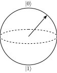
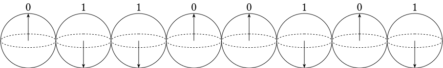
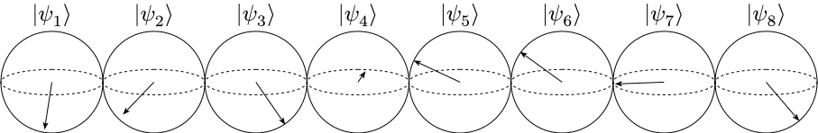
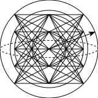

An honest explanation of quantum computing
We have all heard it before:
“It’s doing all possible computations simultaneously!”
“A quantum bit can be both 0 and 1 at the same time!”
“Quantum computers compute in parallel universes!”1
1 I’m shocked that this is no longer an exaggeration.
I get it, it’s difficult to talk about quantum mechanics without resorting to technical jargon, forcing us to rely on analogies that barely make sense.
But I mean, if it’s doing multiple computations simultaneously (in parallel universes or not), how many computations (or parallel universes) is it exactly?
And we can already do computations in “parallel universes” with conventional computers. Its called multithreading and multiprocessing.
So does that mean that I can achieve the same advantage in principle if I simply match the number of conventional computers to the number of parallel universes?
You see, these popular explanations for how a quantum computer works are typically a gross simplification that fails when probed a little. The fact that they even exist in the first place surprises me because the concepts behind quantum computing is actually quite simple.
Yes, that’s right. I believe that the basics of quantum computing is simple enough that any reasonable layperson can understand it.
The mystique only arises when we conflate the metaphysical interpretations of quantum mechanics2 with the explanations of the quantum computations that they can perform. This is akin to explaining classical computation with some metaphysical interpretation of the nature of electricity, e.g., “The reason your computer can calculate 1+1 is because electricity running in your computer can flow on top of each other and thus adds up.” which is not what happens at all.
2 To be fair, these interpretations of quantum mechanics are indeed weird and mind-blowing. But again, no matter how weird electricity is, classical computer science is independent of it. Quantum computing should be viewed the same way. Also keep in mind that these are just interpretations with no evidence of being true.
So what exactly is this simple concept behind quantum computing?
It’s a sphere.
Enters the Bloch sphere

This is called a Bloch sphere, and it captures everything about a qubit (even all the alleged parallel universes).
Anyone can understand and visualize a sphere, so it puzzles me as to why we do not start with this instead of parallel universes or “being 0 and 1 at the same time”. The Bloch sphere is also mathematically accurate. That is, it’s not an analogy, it’s the truth!
In fact, the Bloch sphere also captures classical computing. The familiar logical 0 and 1 bits from classical computing are at the North and the South poles, respectively. In a conventional computer, imagine a bunch of these spheres with an arrow in each pointing only to either the North pole (bit 0) or the South pole (bit 1).

During a classical computation, the arrows simply flip between the North and the South poles, most of the time conditioned on other arrows of other spheres3. The sequence of arrows then represents the results of the computation.
3 E.g., a NOT operation flips 0 (North) to 1 (South) and 1 (South) to 0 (North)
What about a qubit?
Well, we simply free the arrow such that it is able to point to anywhere on the sphere. That’s it. Where the arrow points is the state of the qubit.
So when people say a qubit can be “0 and 1 at the same time”, what they actually mean is that the arrow is pointing somewhere between the North (0) and the South (1) poles. Typically this is at the equator, halfway between the poles.
Of course, there is not just one location on the equator of a sphere. Singapore is at the equator, so is Ecuador, and so are multiple other countries on Earth. This means that two qubits that are “0 and 1 at the same time” can be different. To differentiate them (figure out where their arrows point), or to pinpoint a location on Earth, we require two coordinates, the latitude, and the longitude.
Since the Bloch sphere is also a sphere, the “latitude” and the “longitude” are two variables (or degrees of freedom) that also defines a qubit: \theta the “latitude”, and \varphi the “longitude” also known as the relative phase.

So what happens during a quantum computation?
Well, like the classical case, the arrow in each qubit simply jumps (or rotates) around to and from any point on the sphere4.
4 In general, this is done by performing unitary operations (literally rotations) on it. Typically, these operations can be described by simpler quantum logic gates like the logic gates in the classical case.
So all these talks of a quantum computer being able to perform computations faster because of “superposition” or because it can performs computation “simultaneously” etc., simply refers to the fact that there is an increase in the degrees of freedom for the computation as compared to classical digital computations.
In other words, this freedom for the arrow (its state) to rotate and point to anywhere on the sphere, allows certain computing tasks to require less operations (flipping or rotating of arrows), than if the arrows are confined to the North and South poles.
“But what’s with all the weirdness of quantum physics then?”
It’s true that in actual quantum systems that implements a qubit, there are typically two preferred states (the North and South poles of our Bloch sphere). These are sometimes called pointer states. We observes these preferred states in our classical world as they are what remains after the quantum system loses its coherence. But in reality, the quantum system sees no difference between these preferred states and any other states it could take (e.g., at the equator of our Bloch sphere).
Since we only observes these preferred states (and that our macroscopic reality is built out of them), we deemed them as “natural” which led to these apparent weirdness, e.g., how can something that takes the “natural” states of spin up and spin down, be placed in the “unintuitive” state of “spin up and spin down at the same time”?
So there are some credence to the weirdness and hype. However, again, just like how the computer science of classical computation is independent of the physics of electricity and semiconductors (or their interpretations) etc., the computer science of quantum computation should also be seen as separate from the interpretations of what’s happening in the physical systems that implements them.
The attentive reader will notice that a sphere is spherically symmetric. Just like on the Earth, there are no real ups and downs except for those defined by convention.
What this means is that we can orient the Bloch sphere however we want. Pick any two points at opposite ends of the sphere and we can define that as the 0 and 1. The reason the North and the South poles are defined as the 0 and 1 is simply convention.
Now that you know this, you should realize that the idea that a qubit being “both 0 and 1 at the same time” somehow grants an advantage is quite silly, since it’s just another point on the sphere, no different from the North (0) and the South (1) poles.
A more attentive reader will also ask “what about the insides of the sphere?”.
The reader is right. There is actually a third degree of freedom: the “radius”, which describes the length of the arrow. So yes, the arrow can point to somewhere inside the sphere. These are called mixed states, whereas arrows that point to the surface of the sphere are called pure states.
During a quantum computation, the qubit is sensitive to thermal noises that rotate the arrow in a manner that is undesired. These noises also shortens the arrow’s length to some fixed point inside the sphere depending on the temperature, in a process known as decoherence. This is why (depending on the implementation) quantum computers need to be kept at a very cold temperature, so that they can perform computations before they eventually reach the fixed point inside the sphere.
Entanglement — the actual spice
The Bloch sphere might reminds one of analog computers, where quantities can take a continuum of values instead of the 0s and 1s in digital computers. In fact, if we can build an analog computer with two degrees of freedom like the Bloch sphere, then it can function exactly like a single qubit.
The “quantumness” only comes in if we include the concept of entanglement5. Entanglement is the main spice that makes quantum systems special, preventing it from being replicated by classical systems, e.g., the analog computer with two degrees of freedom.
5 Entanglement is often conflated with the phrase “spooky action at a distance”. The latter describes the apparent nonlocal collapse of the wave function. Einstein, Podolsky, and Rosen (1935) used entanglement as an example to illustrate the significance of this nonlocal collapse, which eventually led to this conflation.
Imagine what would happen if we have two qubits.

One might think that there are now six variables to describe the pair of qubits (where both arrows point) since we now have two Bloch spheres6. However, this is only true if there is no correlation between the pair of qubits, that is, the two arrows are independent of each other.
6 If you thought the number is four instead, take a look at the Extra notes above.
Typically, when the two qubits interact with each other (or undergo quantum computations together), they can become entangled, which means that their two arrows (their states) are now correlated in a way that is impossible to achieve classically.
This is akin to them becoming a single (hyper)sphere with a single arrow pointing at some point that represents their combined state. The dimension of this (hyper)sphere will be the number of variables or degrees of freedom required to describe them.
Quite surprisingly, there can be a total of up to 15 degrees of freedom!

Six variables describe the two qubits independently (three for each), while the remaining nine describes how they are correlated to each other.
It is important to note that this single 15 dimensional Bloch (hyper)sphere describes both qubits together, and it cannot be broken down into separate descriptions for each qubit (without losing information about the entanglement). This means that the two entangled qubits can only be described as single object.
This is the stark feature of quantum systems that sets it apart from classical systems. Supposed that we were to build two analog computers with three degrees of freedom each to simulate the two Bloch spheres, before attempting to correlate their states (perhaps by performing some joint operations on them). We can never correlate them to the extent that entanglement could7.
7 For classical correlations (no entanglement), they can be represented as a weighted sum of multiple pairs of independent Bloch spheres. These are called separable states.
In addition to the increased degrees of freedom, this increased correlation gained by entanglement can also be exploited in various quantum computational tasks.
Is that it?
Yep, that’s it.
Quantum computation is simply the rotations of these arrows on/in Bloch spheres8. While classical computing is confined to flipping between the North and South poles, quantum computing allows arrows to freely rotate anywhere on the Bloch sphere.
8 With some caveats like the fact that we can’t determine where the arrows point (read-out of the state) directly, which we did not touch upon.
Where the arrows point and how they rotate is how we store and process information, just like how a sequence of North and South poles (0s and 1s) and how they flip, encodes, and processes information in the classical case.
By combining multiple qubits, the allowable space or degrees of freedom for this information processing increases. Combined with entanglement, this information processing can take place in even higher dimensional space, with some algorithms exploiting the increased correlation.
The main “essence” of quantum computing is this change in computing paradigm, regardless of whether quantum systems that implement it do so with the help of parallel universes or not.
Again, I want to emphasize the separation between the implementation’s physics (and its interpretation), and this new computing paradigm that grants these advantages over classical computing.
The difficulty of course, is coming up with algorithms that not only can utilize the increased degrees of freedom, but also can be better or faster than the classical case. It turns out however, that classical computing (being confined to the North and South poles) is good enough in most cases, and quantum algorithms that can be better are rare.
This might be because in classical digital computing, how we encode and process information are quite straightforward, and decades of creating higher abstractions means that no programmers are flipping individual bits. However, in the relatively young field of quantum computation, physicists are still concerned with the individual operations or rotations to perform on individual or groups of qubits.
Perhaps one day quantum computing will reach the same status as classical computing. But for now, we are stuck with rotating arrows.